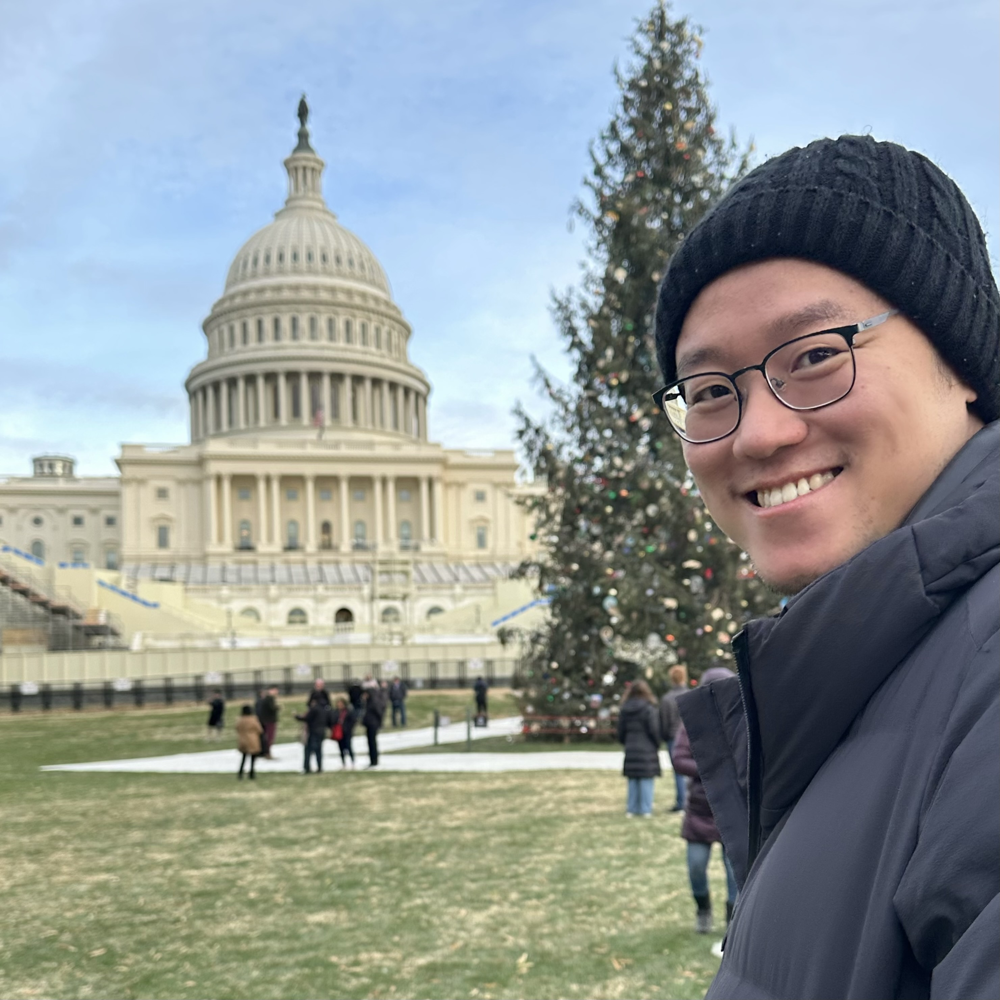

COMPUTER SCIENCE · WIRELESS SYSTEMS · EDGE AI
Ph.D. Candidate in Computer Science · George Mason University
My research lies at the intersection of wireless networking, mobile computing, and artificial intelligence. I design practical systems that combine learning-based signal processing, efficient AI inference, and battery-free communication to make next-generation networks more intelligent and accessible.
My work spans end-to-end wireless prototyping, neural receiver design, mmWave networking, and resource-efficient sensing. I am particularly interested in translating advances in AI into reliable, real-time networked systems.
Email · Google Scholar · LinkedIn · Academic CV
Seeking faculty opportunities in Computer Science, particularly Systems, Networking, Mobile Computing, and AI-driven systems.
Authorized to Work in the U.S. · No Employer Sponsorship Required

I aim to build AI-driven wireless and mobile systems that jointly optimize communication, computation, and sensing. My current research connects three themes:
Learning-based decoding, channel estimation, and adaptive wireless communication.
Compact neural architectures, model pruning, and latency-aware inference for real-time systems.
Low-power backscatter communication and scalable sensing over commodity wireless networks.
MOBISYS 2026 · FIRST AUTHOR
A multi-task transformer jointly learns channel estimation and backscatter decoding; model pruning brings inference closer to real-time wireless requirements.
71 Mbps · 16 μs/symbol · ~1,000× faster demodulation
Research details · Paper PDFSENSYS 2026 · CO-PRIMARY AUTHOR
Protocol-compatible multibeam tags reveal channel and identity information to support concurrent multi-tag beamforming.
Up to 13 dB SNR gain · 11 m range · 2.5 mW
Research details · Paper PDFNSDI 2024 · SECOND AUTHOR
High-speed, ultra-low-power communication using standard 802.11ad/ay beamforming frames and spatial self-interference suppression.
55 Mbps · 87.3 μW · >19 dB SINR improvement
Research details · Paper PDF